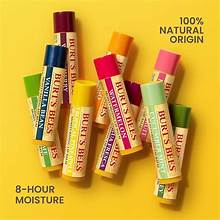

Son Dưỡng Môi Tự Nhiên Burt’s Bees Beeswax Lip Balm – Mềm mịn tự nhiên
Những buổi sáng khô lạnh, tôi luôn bắt đầu bằng một thỏi son dưỡng của Burt’s Bees Beeswax. Chỉ một lần lướt nhẹ, đôi môi như được bao bọc bởi lớp dưỡng mềm mại, mùi dừa ngọt nhẹ và cảm giác ẩm mượt suốt cả ngày – đó là Son dưỡng môi Dừa – Bí Ngô Cocoon.
Son Dưỡng Môi Tự Nhiên Burt’s Bees Beeswax Lip Balm – Mềm Mịn Tự Nhiên

Nếu bạn đang tìm một thỏi son dưỡng môi tự nhiên vừa an toàn, vừa hiệu quả, Burt’s Bees Beeswax Lip Balm chính là lựa chọn hoàn hảo. Sản phẩm được chiết xuất hoàn toàn từ thiên nhiên với sáp ong, dầu dừa và vitamin E. Mỗi lần thoa, bạn sẽ cảm nhận ngay đôi môi mềm mượt, ẩm căng và được bảo vệ nhẹ nhàng, đặc biệt trong những ngày hanh khô. Thỏi son dưỡng môi tự nhiên này không chứa parabens hay hương liệu nhân tạo, an toàn cho mọi loại da, kể cả da nhạy cảm.
1. Thành phần thiên nhiên và lợi ích
Son dưỡng môi tự nhiên Burt’s Bees Beeswax Lip Balm được tạo nên từ những thành phần chăm sóc môi toàn diện:
- Sáp ong: tạo lớp bảo vệ, giữ ẩm lâu dài cho môi.
- Dầu dừa: nuôi dưỡng môi mềm mịn, ngăn nứt nẻ.
- Vitamin E: chống oxy hóa, phục hồi môi khô và thâm.
- Chiết xuất thực vật: làm dịu môi, tăng độ mềm mại.
Nhờ các thành phần thiên nhiên, đôi môi được chăm sóc toàn diện. Một thỏi son dưỡng môi tự nhiên không chỉ giúp mềm mượt mà còn bảo vệ môi khỏi tác động của môi trường.
2. Cảm nhận khi sử dụng
Khi thoa, son dưỡng môi tự nhiên thấm nhanh nhưng vẫn giữ lớp bóng nhẹ. Hương thơm dịu nhẹ mang đến cảm giác thư giãn. Chỉ sau vài ngày, môi giảm bong tróc, mềm mại và căng mọng hơn. Sản phẩm giúp môi khỏe mạnh trong điều kiện hanh khô hoặc lạnh mùa đông.
“Không cần son màu, chỉ với một lớp son dưỡngBurt’s Bees Beeswax Lip Balm là môi mình đã đủ tự tin mỉm cười.”
2. Cảm nhận khi sử dụng
Khi thoa, son dưỡng môi tự nhiên thấm nhanh nhưng vẫn giữ lớp bóng nhẹ. Hương thơm dịu nhẹ mang đến cảm giác thư giãn. Chỉ sau vài ngày, môi giảm bong tróc, mềm mại và căng mọng hơn. Sản phẩm giúp môi khỏe mạnh trong điều kiện hanh khô hoặc lạnh mùa đông.
3. Cách sử dụng
Dùng vào buổi sáng trước khi trang điểm hoặc tối trước khi đi ngủ. Có thể thoa nhiều lần trong ngày khi môi khô. Son dưỡng môi tự nhiên cũng có thể dùng làm lớp lót trước khi tô son màu để môi mềm mượt và giữ màu lâu hơn.
4. Review người dùng
Nhiều khách hàng chia sẻ rằng chỉ sau vài ngày sử dụng son dưỡng môi tự nhiên Burt’s Bees, môi trở nên mềm mại hơn, giảm nứt nẻ và hồng hào hơn. Sản phẩm được đánh giá cao vì hiệu quả nhẹ nhàng, an toàn và dễ dùng hàng ngày.
← Khám phá thêm sản phẩm tại LEO Beauty“Một lớp son nhẹ, một nụ cười tươi – chỉ vậy là đủ cho ngày mới.”
🔗 Tham khảo thêm
💄Son Dưỡng Môi Tự Nhiên Burt’s Bees Beeswax Lip Balm
Dưỡng ẩm sâu, phục hồi môi khô và mang lại vẻ hồng hào tự nhiên. Sản phẩm thuần chay, lành tính, an toàn tuyệt đối.
💸 Giá: 150.000đ
🛒 Đặt mua ngay